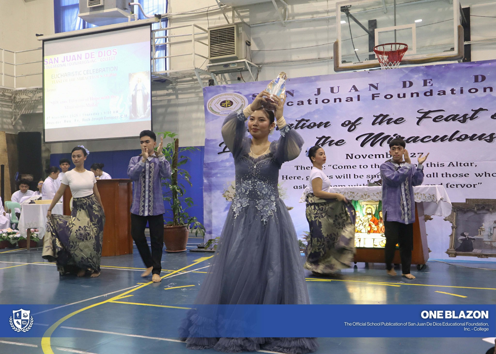
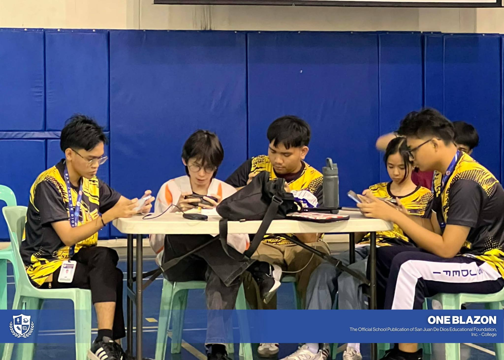
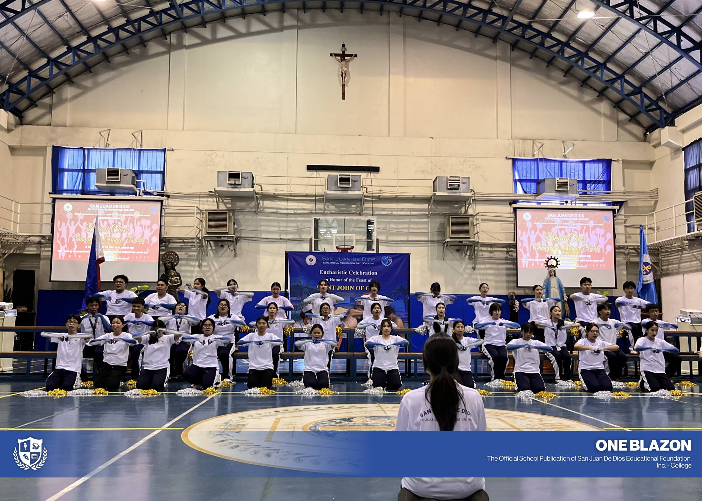
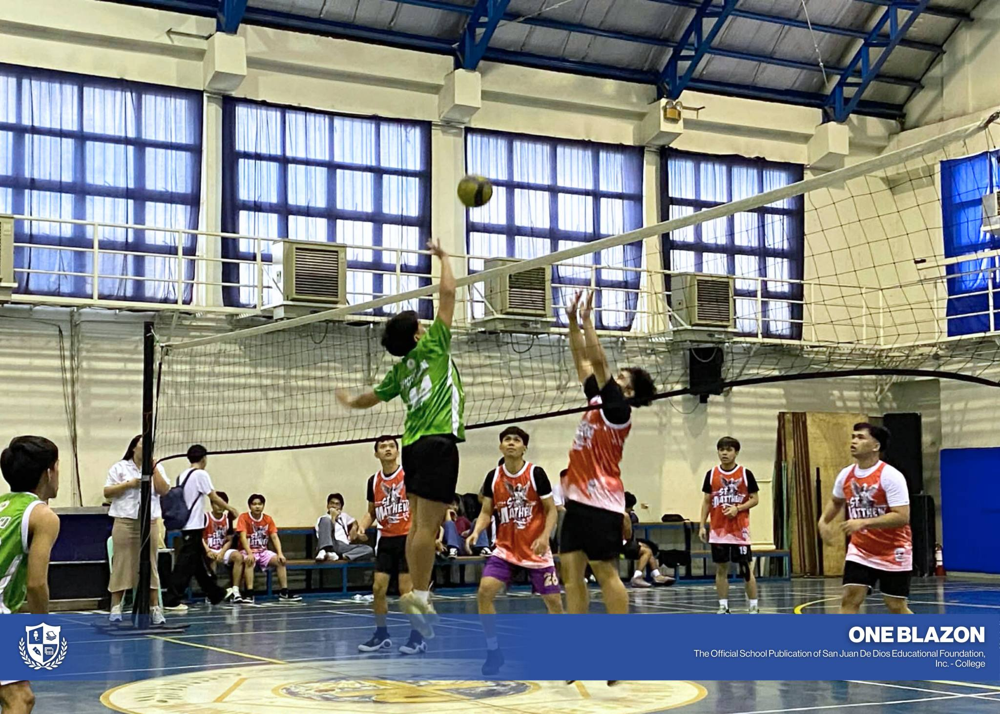
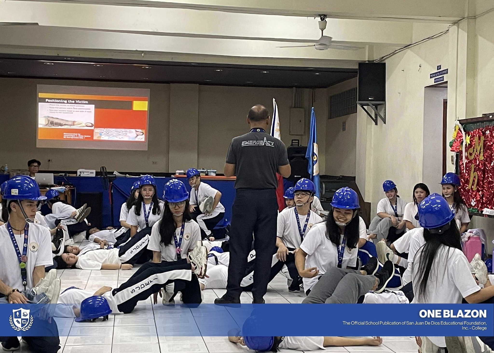

113 Years
NURSING EXCELLENCE
San Juan De Dios Educational Foundation, Inc. – College is where passion meets purpose and students become healthcare and business leaders of tomorrow.
Join a trusted institution with a heritage of excellence since 1578—designed for the ambitions of Gen Z.
NURSING EXCELLENCE
PAASCU RE-ACCREDITED
IMMEDIATE CLINICAL EXPOSURE
PROVEN LICENSE SUCCESS
San Juan De Dios Educational Foundation, Inc. (SJDEFI) is a private, non-stock, non-profit institution in Pasay City, Philippines — jointly operating a college and a hospital rooted in the Vincentian tradition of compassion and service since 1578.
Run by the Daughters of Charity and inspired by St. Vincent de Paul and St. Louise de Marillac, SJDEFI trains the mind, heart, and hands of its students — empowering them to become the best version of themselves and serve their communities with love.
Education grounded in faith, values, and Vincentian ideals.
ISO 9001 certified, PAASCU accredited programs.
Responding to society's needs through compassionate action.
Fostering holistic growth among students, faculty, and staff.
The perfect Senior High School track is just a step away. Choose a path that fits your strengths and future goals.
Build a strong foundation for college with strands tailored for future nurses, medical technologists, physical therapists, entrepreneurs, and more.
Gain hands-on, industry-relevant skills through technical-vocational programs that prepare you for employment, entrepreneurship, or further studies.
Explore programs built for the next generation of healthcare professionals, business leaders, and change-makers.
A glimpse into the vibrant life, traditions, and milestones that define the San Juan De Dios community.






More than a degree — we give you a formation.
Our roots go back to 1578, making SJDEFI one of the most storied educational and healthcare institutions in Philippine history.
Education rooted in compassion, humility, and service — inspired by St. Vincent de Paul and St. Louise de Marillac.
Direct access to San Juan De Dios Hospital gives students unparalleled hands-on clinical training from day one.
Internationally recognized quality standards ensure your degree holds weight both locally and abroad.
Learn from industry-experienced educators and licensed practitioners dedicated to your academic and personal growth.
Our curriculum prepares you for international licensure exams and careers in the global healthcare and business landscape.
Joining the SJDEFI community is straightforward. Follow these steps and become part of a tradition of excellence that spans over four centuries.
Prepare and submit all required documents to the Registrar's Office or through our online portal.
Schedule and take the SJDEFI Entrance Examination. Results are released within 3-5 working days.
Qualified applicants proceed to a personal interview with the department chairperson or admissions panel.
Upon acceptance, complete enrollment by paying the initial fees and submitting final documents.
Don’t miss out on your chance to join a community of trailblazers. Start your journey NOW and become part of a legacy of service, compassion, and innovation.
Open your camera, scan the QR code, and complete your application in just a few steps.